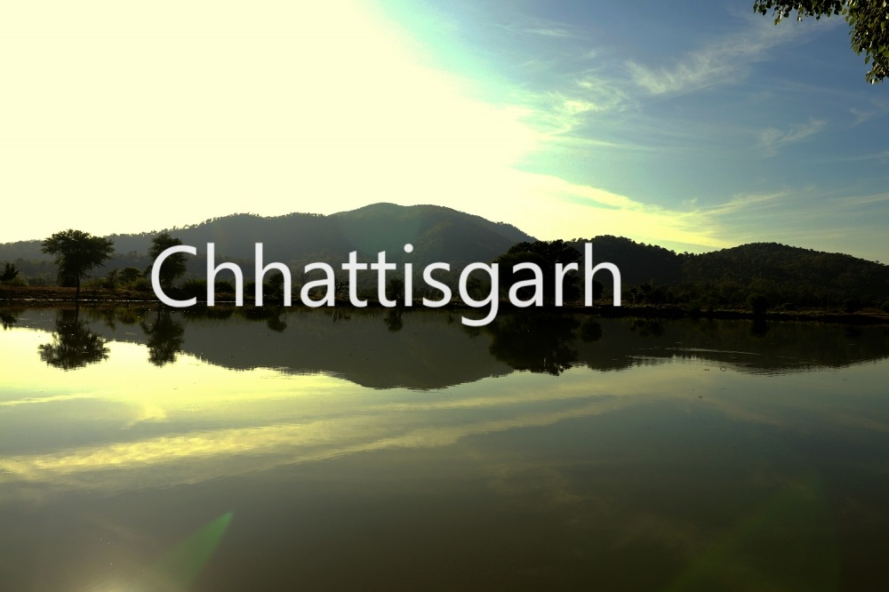

speciality of Chattisgarh
Chhattisgarh is an uniquely Indian experience. Home to the country's widest waterfalls, caves, lush green forests, ancient monuments, rare wild life, exquisitely curved temples, Buddhist sites and hill plateaus. Chhattisgarh boasts of more than 80% of bio diversity that is not found anywhere across the country.
Famous temple

DONGARGARH. Dongargarh is the main tourist as well as pilgrimage of the district. PRAGYA GIRI. Pragya Giri is at Dongargarh, Rajnandgaon district, Chhattisgarh, India. DANTESHWARI TEMPLE. RATANPUR. BHORAMDEO TEMPLE. LAXMAN TEMPLE. GANDHESHWAR TEMPLE. BARSUR TWIN GANESHA TEMPLE.
Hill Stations

The State is blessed with verdant dense forests, spurting waterfalls, magnificent caves, rich temples, graceful Buddhist sites, heritage sites and impressive palaces. The main hill stations of the state are Mainpat, Chirmiri, Baila Dila, Gadiya Mountain, and Ambikapur Hill Station.
Famous food

Badi and Bijori are optional food categories; gulgula (bobra), bidiya, dhoodh fara, bafauli, basuli, balooshahi, singhara, tikhur, anarsa and khurmi fall in rice flour include fara/muthiya (rice rolls in white sauce), cheela (dosa like dish made with rice batter), angakar roti, chousela roti (rice puris)